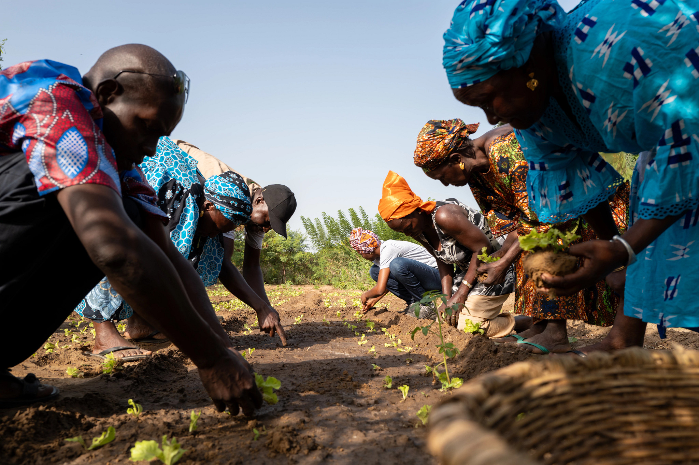
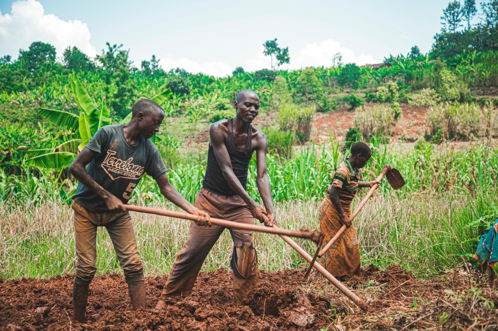

Powerful Features for Smart Farming
Everything you need to maximize your harvest and optimize resources
Real-Time Garden Data Collection
Our smart IoT sensors collect live data from your garden and sync directly to Firebase for real-time dashboard monitoring:
Soil Health:
Continuous nutrient and organic matter analysis
Soil Moisture:
Real-time hydration levels with automated alerts
Temperature:
Soil and air temperature monitoring 24/7
Humidity:
Air moisture levels for optimal growing conditions
Soil pH:
Live pH measurements for perfect nutrient uptake
Firebase Sync:
All data streams live to your dashboard
Live Data Collection Active
View Live Dashboard

AI-Powered Yield Prediction
Plan your harvest and sales with confidence using our advanced analytics:
- Accurate crop yield forecasts
- Optimal planting schedules
- Market timing recommendations
- Risk assessment and mitigation
Smart Water Management
Optimize water usage and reduce waste with intelligent irrigation:
- Automated irrigation scheduling
- Water conservation techniques
- Drought prevention alerts
- Efficiency tracking and reports

Comprehensive Learning Platform
Enhance your farming skills with expert-led training and resources:
- Interactive farming workshops
- Best practices and techniques
- Pest control and disease management
- Market access and trading skills